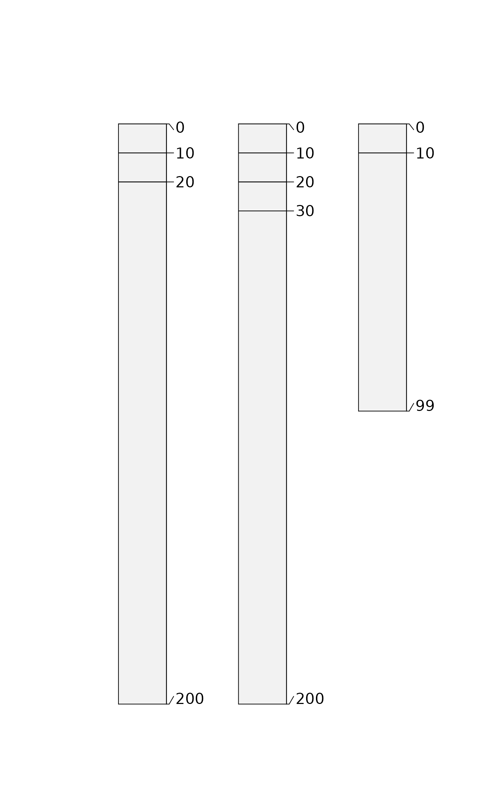
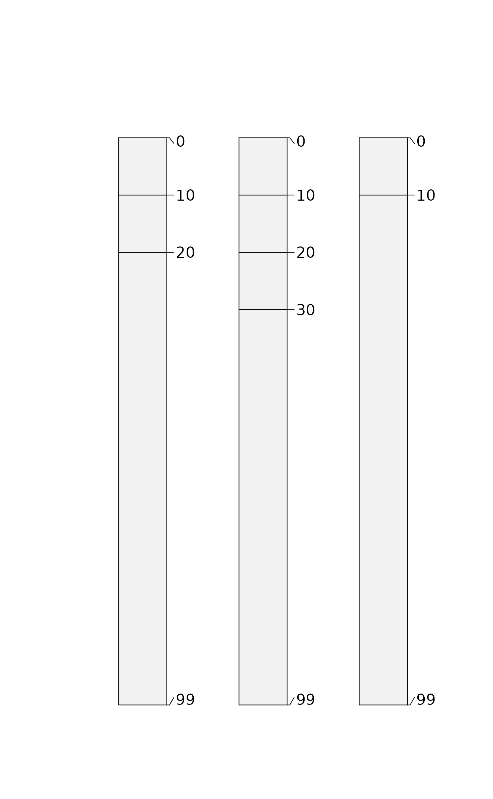
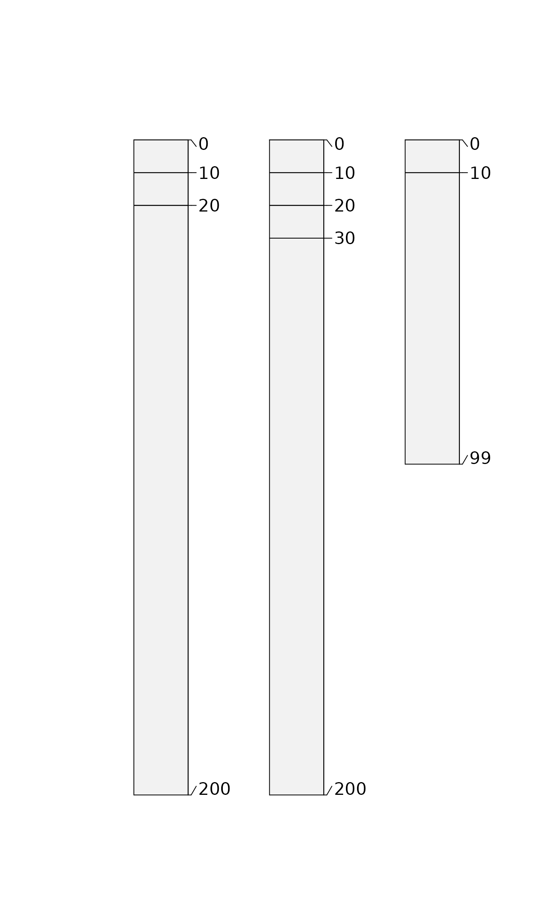
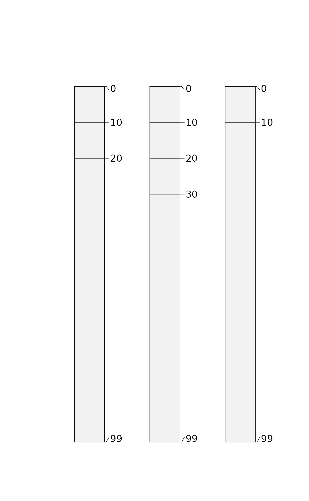

Attempt a simple repair of horizon bottom depths in the presence of NA, or in cases where the horizon shares a common top and bottom depth. Both situations are common in pedon description where "contact" (Cd, Cr, R, etc.) was described without a lower depth.
repairMissingHzDepths(x, adj = 10, max.depth = 200)Arguments
- x
SoilProfileCollection- adj
vertical offset applied to "repair" missing bottom depths when top and bottom depth are equal or bottom depth is missing. (
NAto usemax.depth)- max.depth
If adj is
NA, or the resulting offset sum exceedsmax.depth,max.depthis used.
Value
SoilProfileCollection with a new (logical) horizon-level attribute .repaired marking affected horizons
Details
This repair is applied to the deepest horizon within a profile as identified by getLastHorizonID, as well as to bottom depths of any horizon that has a horizon below it. Horizon bottom depths are adjusted by adding adj (if non-NA). If the resulting value exceeds max.depth, the max.depth value is returned (if not NA).
Examples
h <- data.frame(
id = c(1, 1, 1, 2, 2, 2, 2, 3, 3),
top = c(0:2, 0:3, 0:1) * 10,
bottom = c(rep(NA_integer_, 7), c(10, 99))
)
# NA depths result in warnings
suppressWarnings({
depths(h) <- id ~ top + bottom
})
# inspect data before repairs
plot(h)
 g <- repairMissingHzDepths(h)
# all depth logic now valid
all(checkHzDepthLogic(g)$valid)
#> [1] TRUE
# inspect
plot(g)
g <- repairMissingHzDepths(h)
# all depth logic now valid
all(checkHzDepthLogic(g)$valid)
#> [1] TRUE
# inspect
plot(g)
 # no adj, max.depth only
f <- repairMissingHzDepths(h, adj = NA, max.depth = 200)
all(checkHzDepthLogic(f)$valid)
#> [1] TRUE
plot(f)

# max.depth defaults to max(x) if too small
f$bottom[c(3,7)] <- NA
d <- repairMissingHzDepths(f, adj = NA, max.depth = 20)
#> Using max.depth = 99
all(checkHzDepthLogic(d)$valid)
#> [1] TRUE
plot(d)

# no adj, max.depth only
f <- repairMissingHzDepths(h, adj = NA, max.depth = 200)
all(checkHzDepthLogic(f)$valid)
#> [1] TRUE
plot(f)

# max.depth defaults to max(x) if too small
f$bottom[c(3,7)] <- NA
d <- repairMissingHzDepths(f, adj = NA, max.depth = 20)
#> Using max.depth = 99
all(checkHzDepthLogic(d)$valid)
#> [1] TRUE
plot(d)
